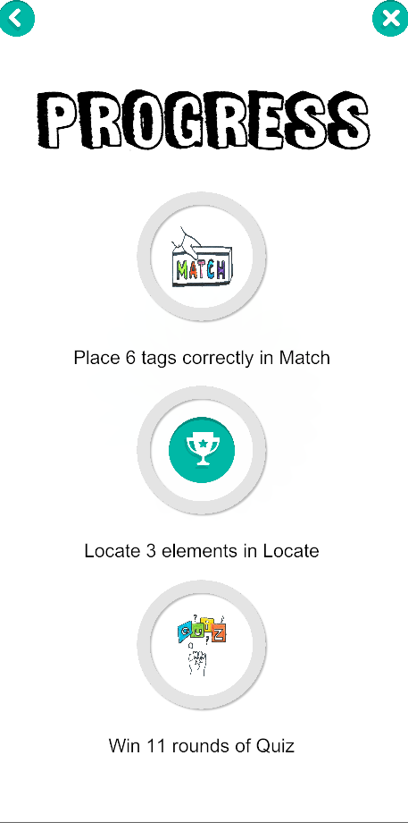

Et gamified interaktivt mobilt HTML-forløb
Quiz, Locate & Match
Optjen point og achievements
""Gamification" is the use of game design elements in non-game contexts" - Deterding (2011)
At forbedre brugeroplevelsen og forøge motivationen
| UI | Design |
|---|---|
| Points | Levels |
| Highscore | Timer |
| Levels | Klare mål |
Når man bygger en bro mellem det eleverne kan, til det de kan med hjælp
The cognitive process dimension - Anderson & Krathwohl (2001)
Hvad der er vigtigt at lære
Hvordan det bør læres
Husk, hvad HTML-elementer er
Forstå "Document Object Model" (DOM)
Forstå, hvordan HTML hierarkiet fungerer
Anvend metoden for, hvordan man opbygger en HTML DOM-struktur
Learnification er, når du anvender læringselementer i en ikke-læringssammenhæng